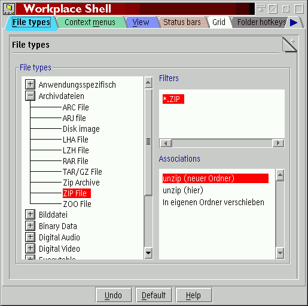

Wie Sie vielleicht wissen, ordnet die WPS Programme Datendateien standardmÑ·ig mittels zweier Mechanismen zu: "Zuordnung Åber Dateityp" und "Zuordnung Åber Dateifilter".
Ist &xwp;s erweiterte Dateizuordnung aktiviert, so gibt es nur Zuordnungen Åber Dateitypen.
Da jedoch bei den meisten Dateien kein expliziter Dateityp gesetzt ist (was auf der Seite "Typ" im Einstellungsnotizbuch einer Datei mîglich ist), ordnet &xwp; Dateiobjekten automatisch Dateitypen nach Dateifiltern zu. So erhÑlt man das beste zweier Welten (Dateitypen und Dateifilter) auf logischere Weise.
Wozu ist dies also gut?
ZunÑchst einmal finde ich den Standardzuordnungsmechanismus der WPS etwas hÑ·lich, wenn Zuordnungen sowohl Åber Dateifilter als auch Dateitypen zugewiesen werden. Die neue Herangehensweise ist hier logischer.
Zweitens, und dies ist am wichtigsten, erlaubt &xwp; die Erstellung von Dateitypenhierarchien. Beispielsweise gibt es viele Dateitypen, die auch wirklich "plain text"-Dateien sind (z.B. "C Code"- oder "HTML"-Dateien), so da· jeder Editor, der "plain text" lesen kann, auch diese Dateitypen lesen kînnen sollte.
Bis jetzt mu·te man denselben Editor all diesen Dateitypen zuordnen. Mit &xwp; kînnen nun beliebige Typen als "Subtypen" von "plain text" definiert werden, und dieser Subtyp wird dann die fÅr den Stammtypen definierten Zuordnungen erben.
Dies kann auf der neuen Seite "Dateitypen" des "Workplace Shell"-Objektes vorgenommen werden (wenn die erweiterten Zuordnungen aktiviert wurden):

Zur Definition von Dateityphierarchien ziehen und Åbergeben Sie einfach Dateitypen
im Baum "Dateitypen" an einen anderen Dateityp.
&xwp; erlaubt es, die alten Dateifilter in die neuen Zuordnungen zu importieren.
Dazu klicken Sie mit der rechten Maustaste in das Feld "Filter" und wÑhlen "Importieren"
aus.